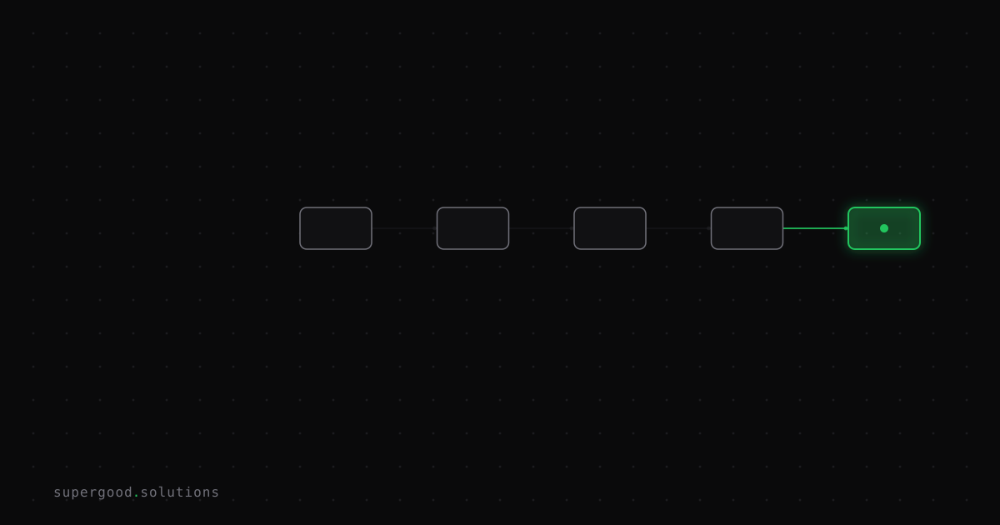

Why Your AI Doesn't Just "Know" Your Company Data (RAG, Explained)
TL;DR: Your AI assistant has never read your wiki. When it answers a question about your company, it is looking something up, and most of the bad answers you see come from the lookup, not the model.
Key Insight
A language model knows what was in its training data and nothing else. Your pricing sheet, your runbooks, last quarter's contract terms: none of it is in there. When a company-aware assistant gets these right, the system is doing something closer to an open-book exam.
That pattern is called retrieval-augmented generation, or RAG. The steps are plain:
- Your documents get split into chunks and stored in a search index.
- A question comes in, and the system searches the index for the chunks that look most relevant.
- Those chunks get pasted into the prompt, next to the question.
- The model writes an answer from what it was handed.
The model is the last step. It never browses your files and it does not remember them. It reads whatever the search step put in front of it, the same way a new hire reads whatever folder you hand them on day one.
If the right paragraph never reaches the prompt, the model cannot answer correctly no matter how good it is. Swapping in a bigger model fixes nothing because the problem sits upstream.
A 2024 experience report, Seven Failure Points When Engineering a Retrieval Augmented Generation System, looked at RAG systems built across several domains. Of its seven failure points, most are about the retrieval and packaging steps: content that was never indexed, the right chunk ranked too low, the right chunk dropped when the context was trimmed. Only a few are about the model misreading what it was given. The authors also note that a RAG system can only be properly validated while it is running, and that its reliability gets built up over time instead of designed in on day one.
Why Teams Miss This
Teams test a RAG system the way they test a chatbot. They ask five questions, read five answers, and judge the answers. A wrong answer gets blamed on the model, so the fix becomes a prompt tweak or a model upgrade.
That skips the question that matters: what did the model actually see? Three things make the gap easy to miss.
- The answer looks fluent either way. A model handed the wrong chunk will write a confident, well-formatted answer about it. Fluency tells you nothing about whether the lookup worked.
- Chunking is invisible. A policy document split mid-table gives the model half a rule. Nobody reviews the chunks, so nobody notices that the exception clause landed in a different chunk from the rule it modifies.
- Similar is not the same as relevant. The index finds text that resembles the question. A question about "the Q3 refund policy" can pull back the Q1 policy, the Q2 policy, and an internal memo that mentions refunds, all of which look right.
Anthropic's write-up on contextual retrieval shows how much is recoverable in the lookup alone. Their method prepends a short description of where each chunk came from before it is indexed, so a chunk that says "revenue grew 3% over the previous quarter" also says which company and which quarter. They report a 49% drop in failed retrievals, and 67% when combined with reranking. Same model, same documents, different lookup.
How to Actually Do It
Stop grading final answers first. Grade retrieval first, because it is the cheaper thing to measure and the more likely thing to be broken.
Build a small set of real questions, 30 to 50 is enough to start, and for each one write down which document the answer lives in. Then check whether the search step returns that document before any model is involved.
# retrieval_check.py
# questions.json: [{"q": "What is the refund window for annual plans?", "doc": "refund-policy-v4"}, ...]
import json
from my_search import search # your existing retriever: search(query, k) -> list of {"doc_id": ..., "text": ...}
K = 5
cases = json.load(open("questions.json"))
hits, misses = 0, []
for case in cases:
results = search(case["q"], k=K)
returned = [r["doc_id"] for r in results]
if case["doc"] in returned:
hits += 1
else:
misses.append((case["q"], case["doc"], returned))
print(f"recall@{K}: {hits}/{len(cases)}")
for q, want, got in misses:
print(f"MISS {q}\n wanted: {want}\n got: {got}")Read the misses by hand. They sort into a small number of causes, and each has a different fix:
- The document is not in the index at all. This is an ingestion problem. Check the sync job, file types, and permissions.
- The document is indexed but ranked low. Try adding keyword search alongside embeddings, add a reranker, or add context to each chunk before indexing.
- The document is found but the right passage is split across chunks. Change how you chunk, usually by respecting headings and tables instead of cutting at a fixed character count.
- The document is found but it is the wrong version. Add dates and version metadata, and filter on them.
Only after recall looks healthy is it worth looking at the model's side: whether it ignores the passage, answers beyond it, or formats the answer badly.
What We've Learned
The most useful habit is to log what the model was handed, next to every answer. When someone says "the AI got it wrong," you open the log and see in thirty seconds whether the right passage was there. That one habit turns an argument about model quality into a specific, fixable bug.
Your next experiment is small. Pick the ten questions your team asks most often, write down where each answer lives, and run the script above this week. If recall is under 90% on questions you know the answer to, the lookup is the project, not the model.
Sources
- Barnett et al., Seven Failure Points When Engineering a Retrieval Augmented Generation System: arxiv.org/abs/2401.05856
- Anthropic, Contextual Retrieval: anthropic.com/research/contextual-retrieval
- Claude Cookbook, Enhancing RAG with contextual retrieval: platform.claude.com cookbook guide
Have a specific workflow in mind?
Bring it to a Quick Scan — a live working session where we'll tell you honestly whether it should be an agent, a workflow, or left alone, before you spend a dollar building it. You get 3 prioritized recommendations on the call, a one-page summary after, and the $500 credited toward any engagement within 30 days.
Get new posts + practical agent-ops notes
One email when something new goes up. No nurture sequence, no spam — unsubscribe whenever you want.